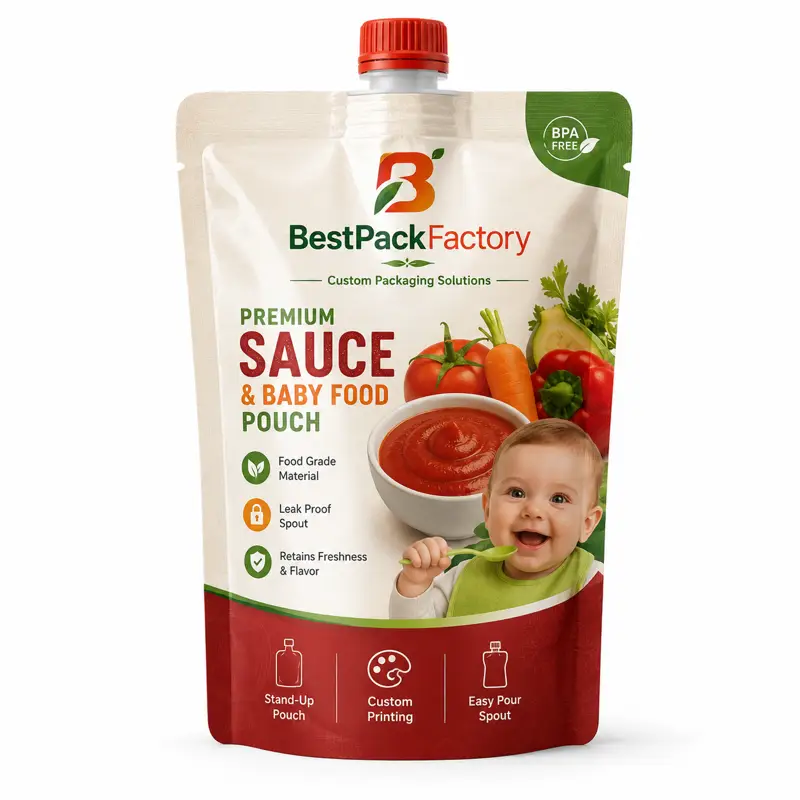

Custom printed spout pouches for liquid packaging, sauce, baby food, puree, and drinks.
BestPackFactory supplies this product for B2B brands, food manufacturers, distributors and enterprise packaging buyers. We support custom size, spout diameter, material, artwork, surface finish and global delivery.
| Business Model | B2B RFQ only, no retail checkout |
| MOQ | 500 PCS |
| Customization | Size, spout, material, logo, color, finish, barcode, QR code |
| Best For | Sauce brands, baby food manufacturers, beverage companies and wholesalers |
| Contact | Sales Manager: Lisa Wu Email: lisa@colorprintingpackage.com WhatsApp +86 158 8653 0985 |
Are these pouches BPA free?
Yes. We use food-grade materials and spouts that are BPA free and compliant with FDA/EU regulations.
What is the MOQ?
The MOQ for custom production is 500 PCS.
Can they be used for hot filling?
Yes. We can specify heat-resistant materials (e.g., NY/R-CPP) for hot filling and pasteurization processes.
The table below is written for industrial RFQ comparison. Final production specification is confirmed by sample approval and filling test.
| Recommended material structure | PET 12µm / NY 15µm / PE 80-120µm; PET 12µm / AL 7µm / NY 15µm / PE 80µm |
|---|---|
| Spout Diameter | 8.5mm, 10mm, 15mm, 22mm; center or corner position options |
| Barrier target | OTR ≤ 1.5 cc/m²·day; WVTR ≤ 1.5 g/m²·day for sauce packaging |
| Seal strength | ≥ 40 N / 15 mm for liquid-tight security |
| Typical capacity | 50ml, 100ml, 250ml, 500ml, 1L, 2L; custom volume available |
| Surface finish | Glossy, Matte, Soft-touch, Spot UV, hot foil optional |
| Printing registration tolerance | ±0.3 mm for multi-color gravure printing |
| Recommended test | Vacuum leak test + spout pull test + filled drop test at 1.0 m |
| MOQ | 500 PCS per custom size / artwork |
| Artwork file | AI / PDF / PSD accepted; vector logo required; 3 mm bleed |
| Color tolerance | ΔE ≤ 3.0 against approved digital proof |
| Dimension tolerance | ±2 mm for pouch size; ±1 mm for spout position |
| Quality inspection | AQL 2.5 for major defects; 100% leak test for spout insertion |
| RFQ data required | Volume, filling temperature, product type, artwork, quantity, destination |
| Sampling time | Dieline and artwork proof within 24 hours; physical samples in 5–7 working days after artwork confirmation |
| Bulk production | 20–30 days after final sample approval; exact schedule confirmed on the order sheet |
| Payment terms | 30% T/T deposit before production, 70% balance before shipment; L/C, PayPal and Escrow also accepted |
| Incoterms | FOB Shenzhen, CIF, EXW and DDP; freight depends on destination, quantity and packing |
Click below to contact us quickly by WhatsApp or email. We can help with dieline, samples, printing, materials and worldwide shipping.
💬 Chat on WhatsApp ✉ Email Inquiry lisa@colorprintingpackage.comBefore you send an RFQ, work through these seven sourcing decisions so your quote, MOQ and lead time are realistic.